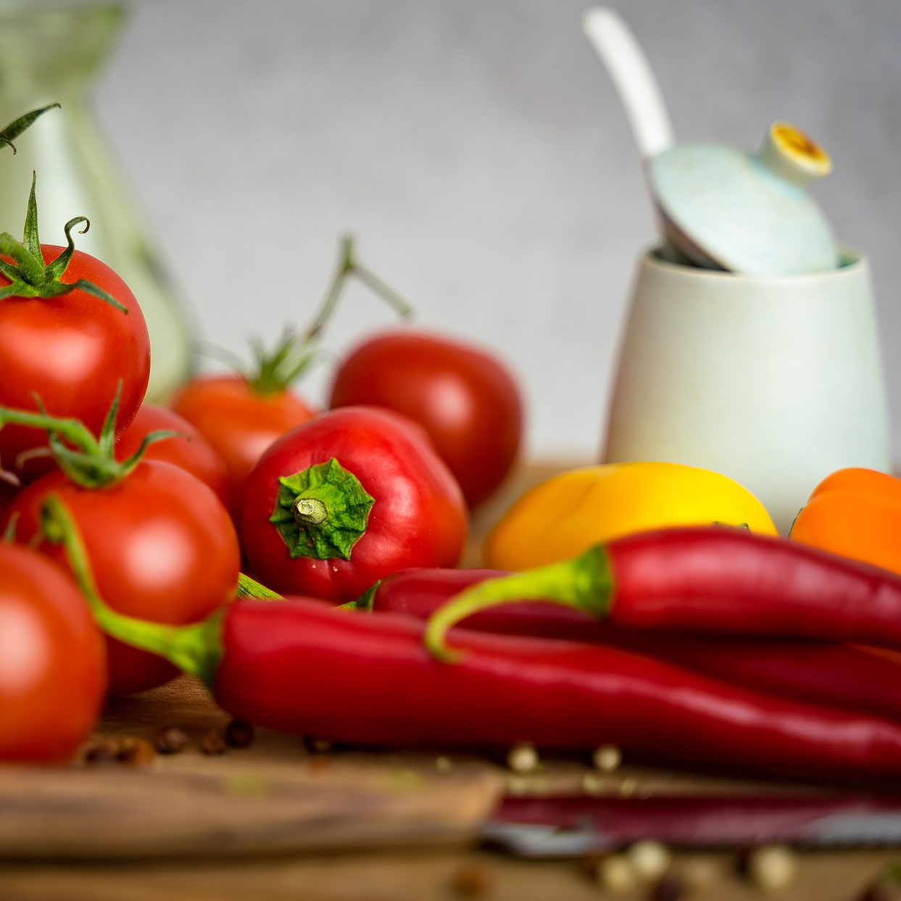
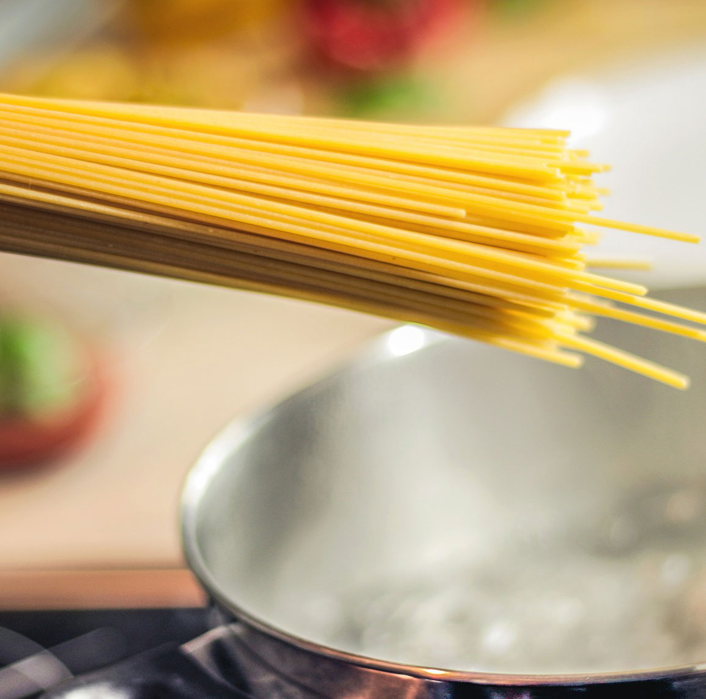

It's understandable in today's society that not everyone is going to be a cooking enthusiast. It requires time and patience - two things many of us don't have much of these days. However, it certainly can make an excellent hobby for those who enjoy it. Not only are there several benefits in terms of health and nutrition, but there can also be fringe benefits for those so inclined. There are plenty of reasons to take up cooking as a hobby. Today I'd like to explore just a few.
First, those who learn to cook and actually enjoy doing so are generally never at a loss when it comes to the age-old question, "What's for dinner?"" Being creative in the kitchen means you can take whatever's available and generally come up with something edible, if not delicious. We all require sustenance, so why not have fun and be creative while fulfilling that need?
 Speaking of sustenance, the fact that most prepackaged foods are high in sodium, sugar, or both and often they're not quite what they claim to be on the box is another reason to make cooking a hobby. Cooking for yourself means you know exactly what's going into your food. For those with dietary restrictions, cooking for yourself is usually the best option for nutritious and safe meals. You can add or substitute ingredients you prefer for ones that you shouldn't have or don't like. Plato once wrote that "necessity is the mother of invention, and it's certainly true when it comes to cooking.
Aside from health benefits, cooking is also a great way to explore other cultures. Trying new foods from different cultures can lead you to find new favorite dishes, but it can also lead you to a deeper appreciation of the culture and the people. You can expand your horizons and taste the world from the comfort of your own kitchen.
Cooking is a rather versatile hobby. It isn't something that must be done to the exclusion of other things. You can listen to music and dance around your kitchen as you prepare dinner. You can spend quality time with others while cooking, too. It's one of several hobbies that allow you to potentially create a source of income for yourself.
 Food brings people together. For those who enjoy entertaining guests, being someone who enjoys cooking can lead to more opportunities to entertain - and once word gets out, people will readily accept that invitation. Inviting a few friends over to enjoy an evening together around food can be truly satisfying. You're also never at a loss when it comes to potluck and picnic invitations, either.
With cooking, you can see (and taste!) your progress as your skills advance. It's always nice when your efforts in a hobby pay off, but being able to actually see your progress can motivate you to stick with it.
Cooking can be meditative and relaxing when we take our time and really get into it. It's ritualistic in nature. Recipes can be passed down from generation to generatio - we carry on traditions as we prepare family recipes. It allows us to connect with one another over time and distance. We cook for those we love. Certain scents and flavors can transport us back in time and evoke memories of those who have nurtured us. In this way, cooking can be cathartic as well.
So next time you need a break, find yourself bored, or just plain hungry, allow yourself to get into creating and experimenting in the kitchen. Cooking can be a genuinely satisfying hobby if we take the time to learn.